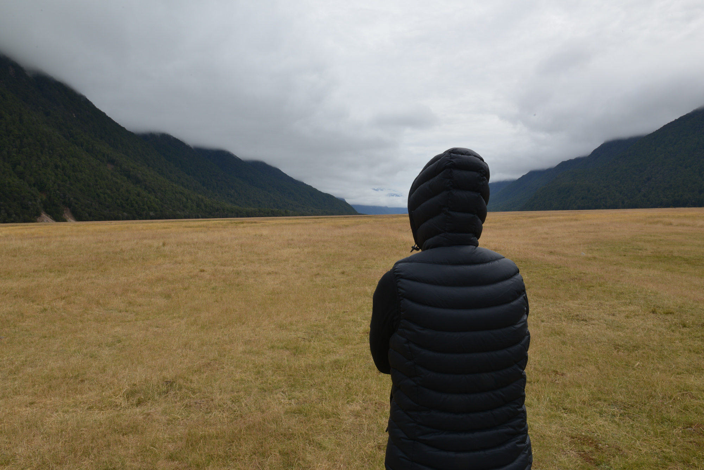

Features - The Boweress
Dramatic beauty
15 January, 2017
To reach anything so untouched and pristine you have to work for it. New Zealand’s natural beauty doesn’t come easily and you will definitely clock up the steps in order to find paradise. Fiordland National Park is the largest park in New Zealand occupying the south west corner of the south island. The landscape is as ever-changing as the weather which provides lush variance of wild flowers, spectacular mountain ranges and bright green moss covered forests.
Making the voyage to milford sound is a must with the journey being more interesting than the final destination. There are numerous spots to stop off and soak in the outstanding natural landscape. The scenery is as dramatic as it is beautiful truly making you feel small yet strong and adventurous at the same time. It’s moody all consuming atmosphere provide an amazing backdrop to awe inspiring visuals. The colours are so vivid, at times it’s like looking at a painting. On top of this the locals are super nice if you manage to find any as it’s over run with tourists from well everywhere. One note, the sandflies are rampant and if you think you’re going to be taking a casual kayak through the fiords, come prepared! The isolation you feel upon visiting somewhere so pristine and well kept is a truly liberating experience. Go, if only for the breather.
